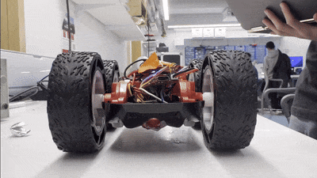
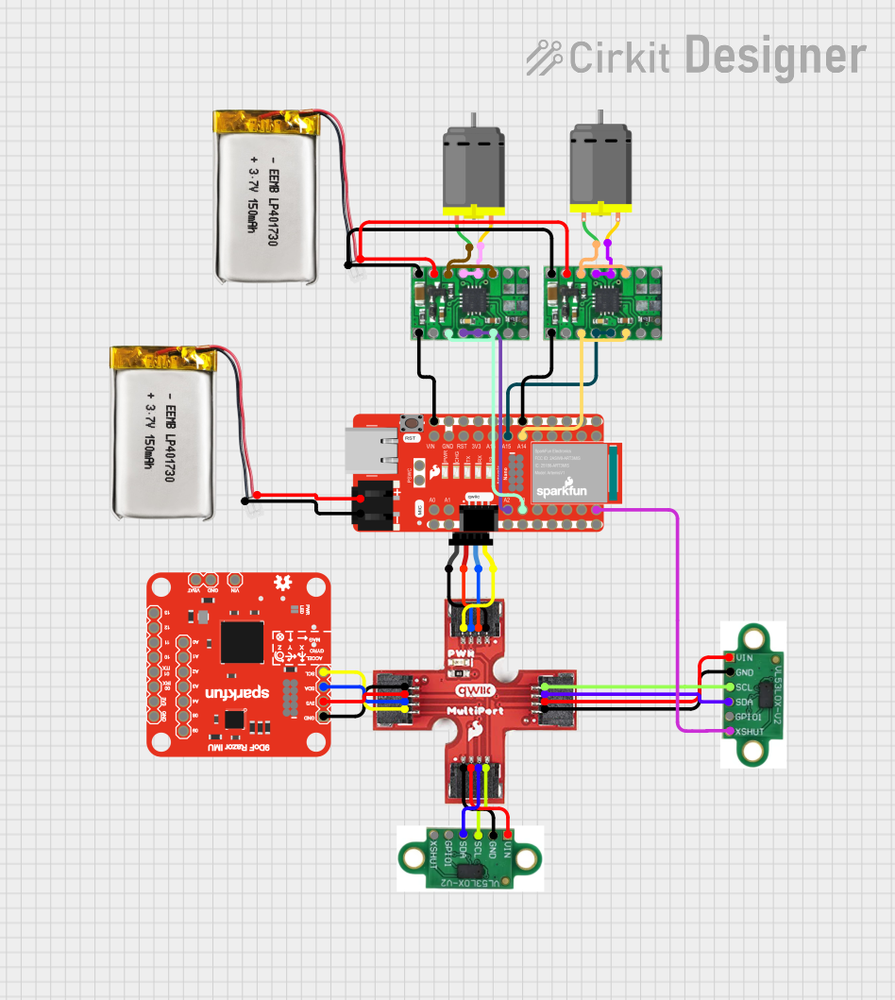
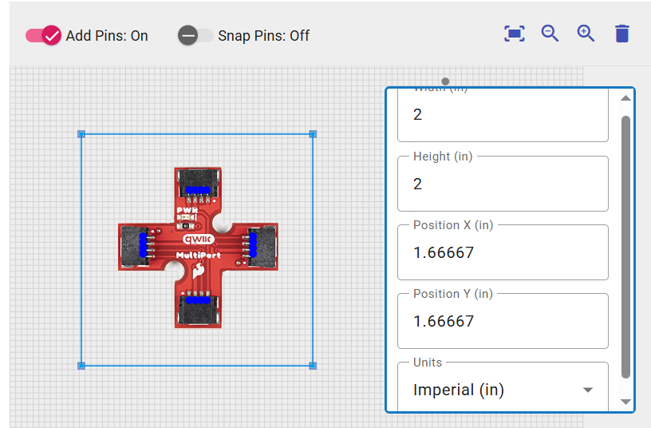
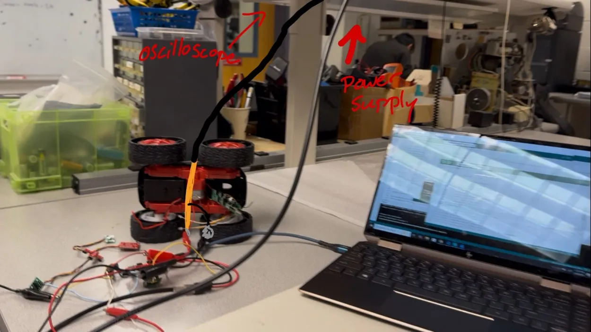
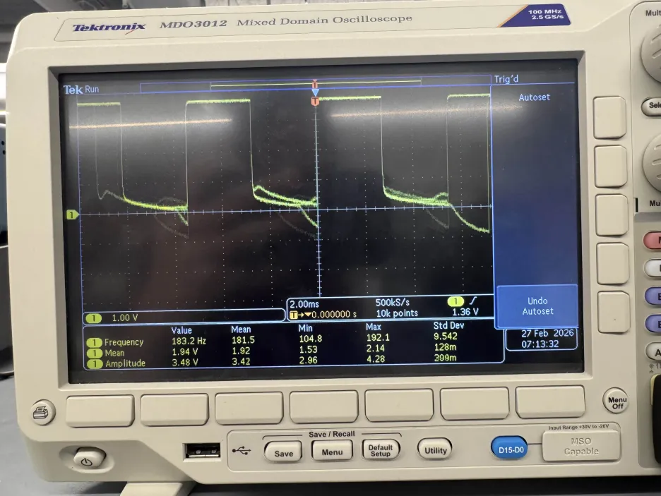
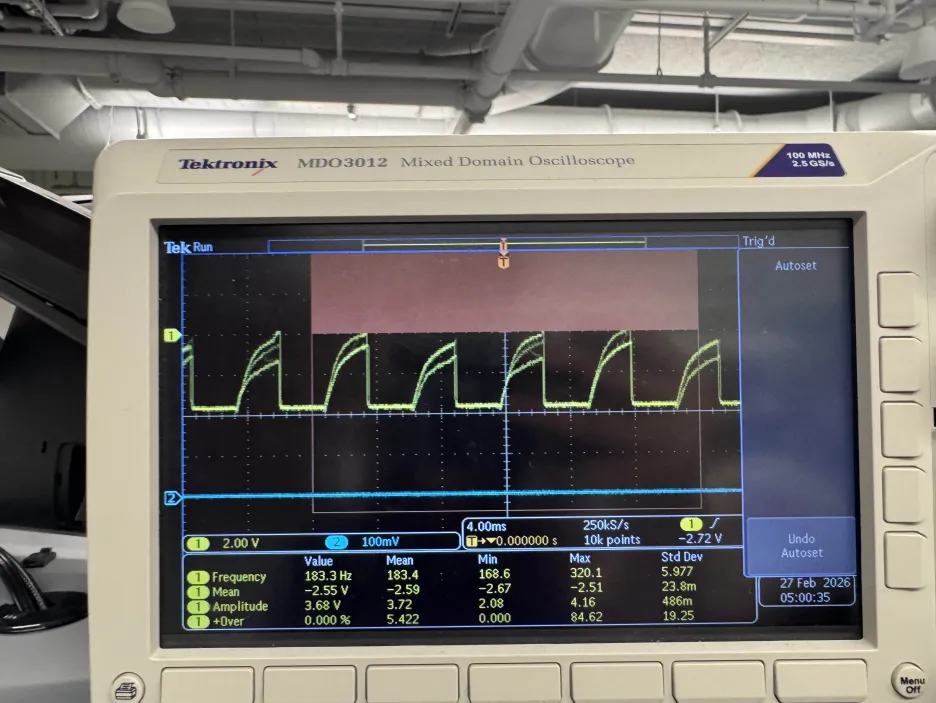
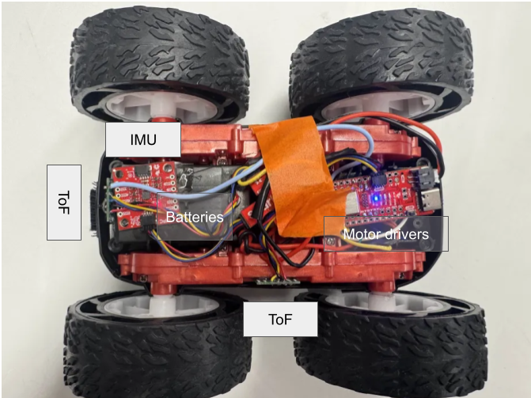
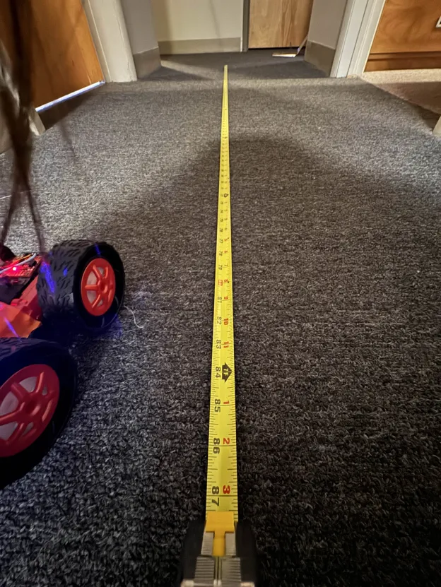
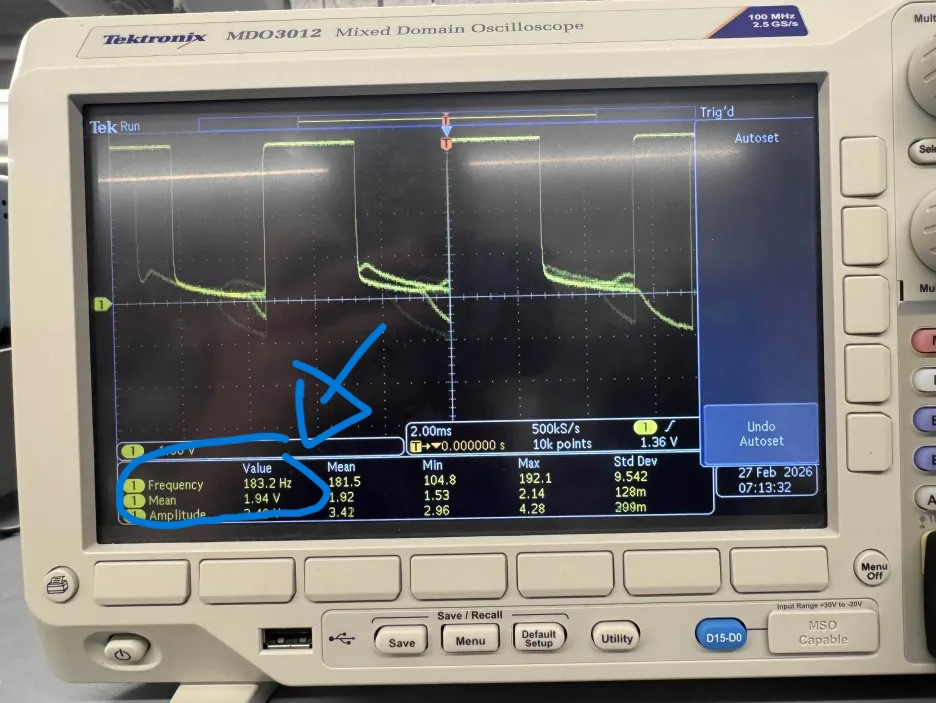

Arduino IDE • Bluetooth • Jupyter Notebooks • Motor Driver
This lab serves to assemble the robot hardware components and connect them to the Artemis Nano board. The robot is a simple differential drive robot, with two motors connected to two motor drivers, the time of flight sensors and IMU and Artemis Nano from the previous labs. This lab also involves testing the motor drivers and using them with PWM signals.
The wiring diagram for the robot is shown below. The Artemis Nano is connected to the sensors from the previous labs via the onboard QWIIC connector and breakout, and the DC brushed motors are connected to the output pins of the motor drivers, which are connected to the Artemis Nano on pins 2 and 3 for one controller and pins 14 and 15 for the other controller. These pins were chosen because they are all analog outputs and connected to hardware PWM channels to control the motor drivers. The grounds of all the motor drivers are connected to the battery and Artemis. We power the motors and the board with separate batteries to prolong our battery life, prevent voltage drops that can turn off the Artemis, and prevent large voltage spikes from the motors from damaging the board. All batteries are 3.7V.
The motor drivers we are using are the DRV8833 dual motor driver. Each board can control two DC brushed motors, but we use two of them to control our two motors. This is to draw more current from the drivers since each output port can only provide a certain amount of current. Connecting the two channels together in parallel is only possible because the circuitry is the same for each channel and is all on the same chip, so the timing of the signals should be identical.

The wiring diagram was created with Cirkit Designer, but the QWIIC multiport breakout board was not in the public library so I made it myself and added it to the public database (this was actually done for the last lab but I forgot to include it here).

Before we can drive the motors, we need to verify that our motor controllers are working and that we know how to control them with the Artemis Nano. We can power the motor drivers with a power supply and connect the input pins to the Artemis Nano, and then use the Arduino IDE to send PWM signals to the motor drivers and look at the output signals on the oscilloscope. From the datasheet of the DRV8833, we know that the maximum average current for one channel is 1.2A, so we will use a power supply that can provide at least 2.4A at 3.7V to power a motor at full speed since each motor uses two channels. While I don't have a picture of the setup connected to the oscilloscope, I have drawn a modification from the testing setup for testing the motors moving using an external power supply.

Here we have an output from the oscilloscope showing the motor output signals and the code to test shown below:#define LEFT1 3
#define LEFT2 2
#define RIGHT1 14
#define RIGHT2 15
void setup() {
Serial.begin(115200);
pinMode(LEFT1, OUTPUT);
pinMode(LEFT2, OUTPUT);
pinMode(RIGHT1, OUTPUT);
pinMode(RIGHT2, OUTPUT);
analogWrite(LEFT2, 0);
analogWrite(LEFT1, 128);
analogWrite(RIGHT2, 0);
analogWrite(RIGHT1, 0);
}
For our testing, we used a PWM signal with a 50% duty cycle on one input, and a zero signal on the other input of the motor driver. As we can see from the oscilloscope output, we get a clean-ish PWM signal with a 50% duty cycle on the output, which is what we expect to see. We can also see that the average voltage is 1.94V which is around 50% of the 3.7V supply voltage, which is also what we expect to see. Towards the end of the signal we can see some noise and a slower decay, which is most likely due to parastic capacitances in the circuit, causing it to take some time to discharge to 0V. Overall, this shows that we can control the motor drivers with PWM signals from the Artemis Nano, and we can use this to drive our motors. However, I also wanted to test how the signal would behave if I ran the same program but switching which input pin was high and which was low. The results of that test are shown below:
As we can see, this produces a much noisier output which is strange since the electrical connections are the same. My best hypothesis is that it is EMI from the motor driver or maybe a loose solder connection to the high input pin, but I wanted to test if this would affect the performance of the actual motor. I then connected the output pins of the driver to the motors using alligator clips (which is what the picture above is depicting), and I found that it had no problem running with both configurations, so I am not too concerned.After verifying that the motor drivers work correctly, I soldered their outputs to the motors of the robot and tested that they move properly. I stepped through different PWM values and verified that the motors would move at different speeds, and I also verified that switching which input was high and which was low would change the direction of the motor, which is what we see. The wheels wouldn't move until we reached a PWM duty cycle of around 11.76% (30/255) which is most likely to overcome the static friction of the gears. The code to do this is shown below:
void loop() {
for (int i = 0; i < 10; i++) {
float dutyCycle = (25.0 * i) / 255.0;
// Forward
Serial.print("starting with ");
Serial.print(dutyCycle);
Serial.println(" duty cycle");
analogWrite(LEFT2, 0);
analogWrite(LEFT1, 25 * i);
analogWrite(RIGHT2, 0);
analogWrite(RIGHT1, 0);
delay(5000);
// Backwards
Serial.print("backwards with ");
Serial.print(dutyCycle);
Serial.println(" duty cycle");
analogWrite(RIGHT2, 0);
analogWrite(RIGHT1, 0);
analogWrite(LEFT2, 25 * i);
analogWrite(LEFT1, 0);
delay(5000);
}
}This was then repeated with the other motor driver and motor to ensure that both sides worked.
Next, we soldered the battery connections to the motor drivers to allow for completely untethered operation. This also allows us to test the motors spinning at the same time and going forwards as shown below:
To do this, we implemented the motor pin setup code from above into the bluetooth code, and controlled the motors from a Jupyter notebook. The code to do is is below:
ble.send_command(CMD.MOVE_FORWARD, "100|2500|1") #PWM|duration|stop the motors after the duration has elapsed?With this, we have everything in the car settled in. Below is a picture of everything placed in the car. The ToF and IMU are currently held in place with double sided tape, and the Artemis and motor drivers are just shoved in there and taped down.

The robot has friction it needs to overcome in the gears and the ground, so we need to find the minimum PWM duty cycle that can overcome this static friction to get the robot moving. To do this, we used the bluetooth and python code to slowly ramp up the PWM value until the robot moved. The minimum PWM value that would make the robot move forwards was 35, which correlates to a duty cycle of around 35/255=13.73%. For doing an on axis turn it was 204/255 = 80% duty cycle to have both motors move. However, the robot was able to do a turn with one motor moving and the other motor stationary at a duty cycle of 130. Additionally, the robot was also only able to move both motors at 204 but not 203, but this was inconsistent as sometimes it moved at 203 but not 204. This may be due to the wheels heating up and reducing the friction, or maybe the battery voltage dropping and not being able to provide enough current to overcome the static friction, or maybe just some inconsistency in the surface of the ground. The video below shows it turning at PWM values of 130, 204, and 203. This was tested on the smooth table of a Philips Hall lab, but in the carpeted floor of my apartment, the robot could not do an on axis turn at all even at 100% duty cycle, although I still have to do further testing to determine if my battery was fully charged or not, which would greatly affect performance. A video of it moving is shown below:
The two motors and motor drivers of the robot are not perfectly identical, so to get the robot to move in a straight line, we need to do some callibration to find the right PWM values for each motor. Surprisingly though, at the same PWM values, the robot actually moved in a pretty straight line, so I didn't have to do any callibration to get it to move straight. Below is a video of it moving in a straight line with the same PWM values of 100 for both motors and a picture of the tape measurer to show that it moved 7ft:

I wanted to test how nicely I could control the robot with open loop control. I set the robot down at the same starting point in my apartment and wanted to make it move forwads and turn about 90 degrees to the right and move forwards again to avoid the obstacles in front of it. Below is a successful test of it doing that.
A PWM signal has a duty cycle (how long the signal is high for) and a frequency (how fast the signal oscillates). The default frequency of the PWM signal from the analogWrite function on the Artemis Nano is 183.2Hz as shown by the oscilloscope in the image below:

This frequency is fast enough that the motor doesn't have time to react to the individual pulses and just reacts to the average voltage, which is what we want. However, if we increased the frequency, then theoretically, the motor would be even better at not responding to the individual pulses and would be more responsive to the average voltage, thus being less jittery even though the jitter is currently impercievable.
After the robot starts moving, the static friction is no longer a factor and we only have to overcome kinetic friction to keep the robot moving. This requires much less force, so we can get away with a much lower PWM value. Through testing, I found that the robot could keep moving at a PWM value of 30, which is a duty cycle of around 11.76%, which is lower than the 13.73% duty cycle required to start moving. For this, I spun up the motors with a PWM value of 150 for 0.5 seconds to get it moving, and then reduced the PWM value to 30 to see if it would keep moving for another 5 seconds, which it did. Additionally, the robot was able to do an on axis turn with both motors moving at a PWM value of 190, which is a duty cycle of around 74.51%, which is also lower than the 80% duty cycle required to start an on axis turn. For this, I spun up the motors with a PWM value of 230 for 0.5 seconds to get it turning, and then reduced the PWM value to 190 to see if it would keep turning for another 3 seconds, which it did. The video below shows it moving at these values. The code used to do this is also shown below.
ble.send_command(CMD.MOVE_BACKWARDS, "150|500|0")
ble.send_command(CMD.MOVE_BACKWARDS, "30|5000|1")ble.send_command(CMD.TURN_RIGHT, "230|500|0")
ble.send_command(CMD.TURN_RIGHT, "190|3000|1")I collaborrated with Ananya Jajodia and Shao Stassen on this lab. I also used Aidan Derocher's website as a reference for the wiring.